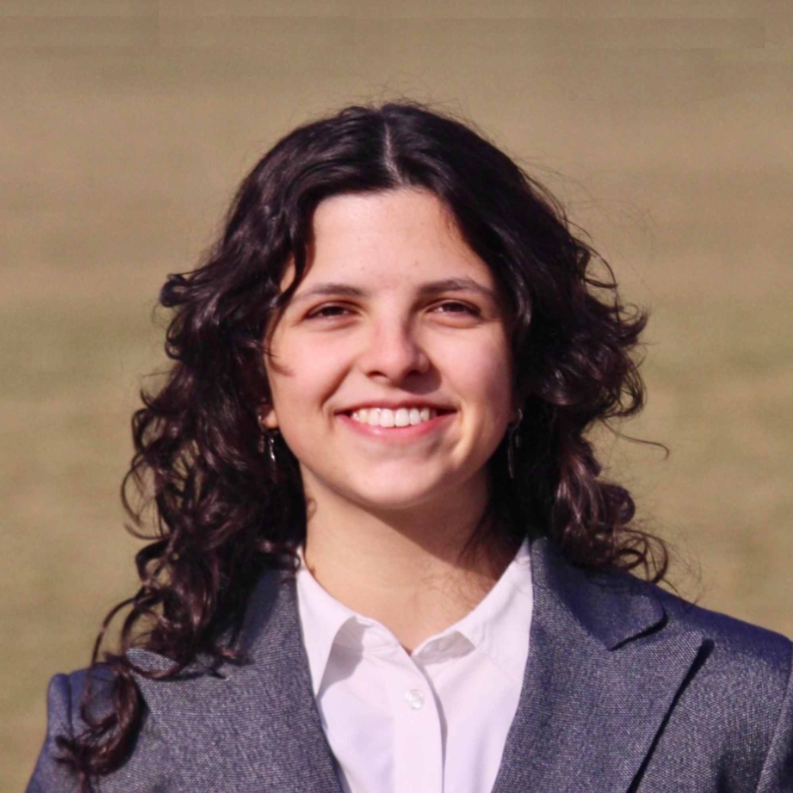
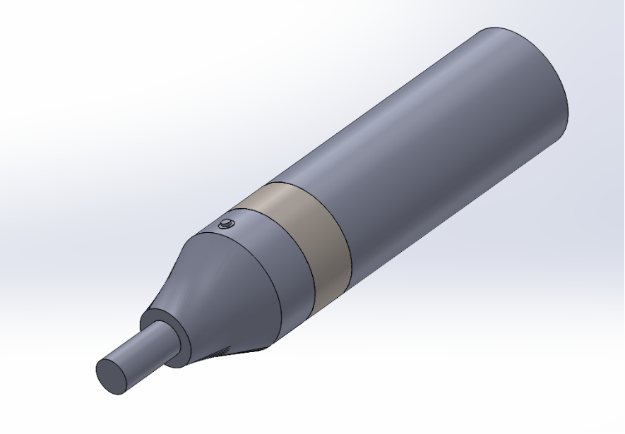
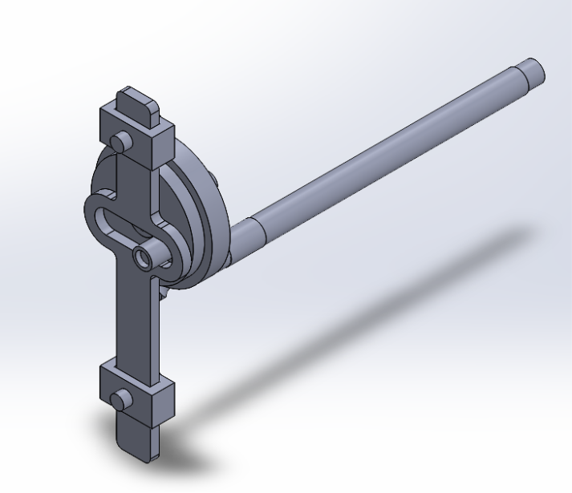
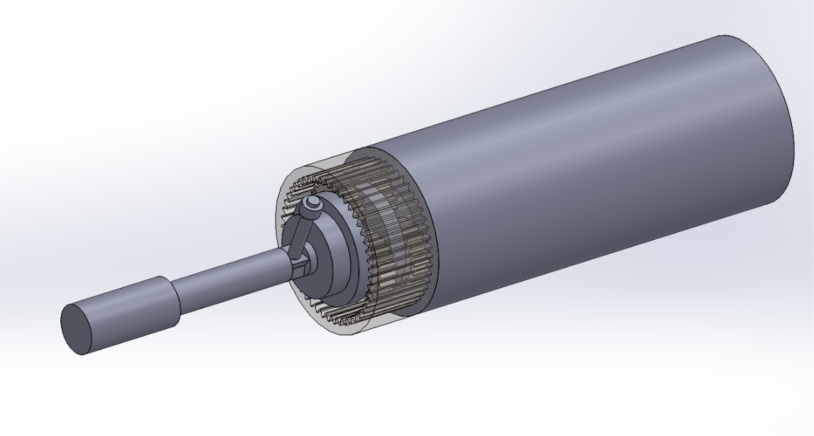
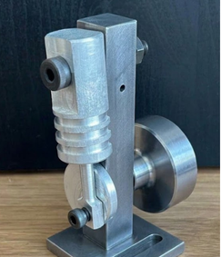

Mechanical Engineering Student | University of Toronto
Biomedical Devices • Product Development • CAD Design • Manufacturing

Mechanical Engineering student at the University of Toronto with interests in biomedical devices, medical imaging systems, manufacturing, and product development.
My experiences span hospital equipment maintenance, CAD design, engineering operations, medical devices, robotics, and multidisciplinary product development.
Electronica Medica, S.A.
Performed maintenance and troubleshooting on ultrasound, mammography, X-ray, CT, MRI, and fetal monitoring systems while supporting hospital engineering operations.
Mantra Global Corporation
Reviewed engineering drawings, managed beam tracking systems, coordinated fabrication workflows, and improved project organization across multiple construction projects.
Led a multidisciplinary team in the design of a robotic cinematography arm for hobbyist filmmaking. Developed CAD assemblies, transmission systems, motor selection analyses, torque calculations, and subsystem integration using SolidWorks.
Designed a wearable bright light therapy device intended to improve accessibility and usability of light-based treatment. Focused on user-centered product design, subsystem architecture, and biomedical applications.
Mechanical Design Lead for UTBIOME developing a rehabilitation sleeve for ACL recovery. Conducted CAD development, wearable-device design, medical-device trade studies, and rehabilitation-focused product development.



Completed advanced SolidWorks projects involving reverse engineering, mechanism modeling, parametric CAD development, engineering drawings, exploded assemblies, and design documentation.

Manufactured mechanical components from raw stock using lathes, milling machines, drill presses, grinders, and precision measurement equipment while developing practical manufacturing experience.
Email: leire.lasa@mail.utoronto.ca
LinkedIn: www.linkedin.com/in/leire-lasa-b4a230217
GitHub: https://github.com/lasaleir